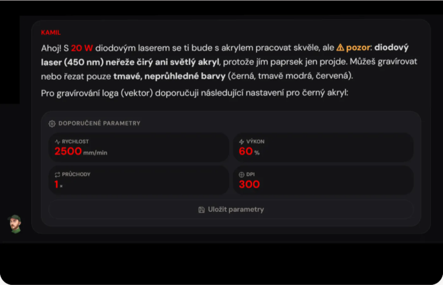
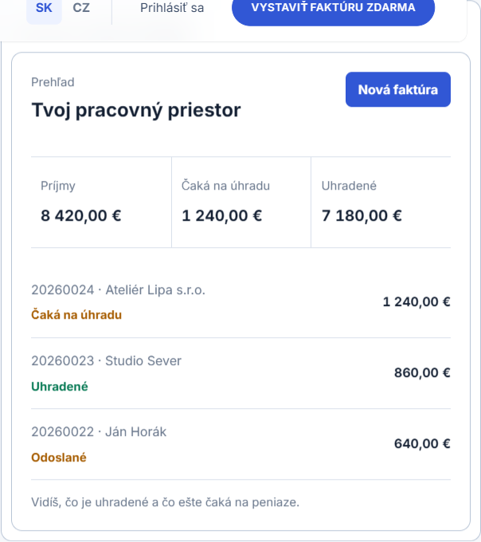
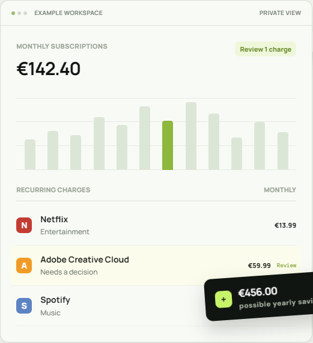

01 — AI NÁSTROJ
Lasero
Pracovní prostor, který mění zadání v soubor připravený pro laserové gravírování.
Produktový koncept · UX/UI · vývoj
Případová studie
Produktový designér & vývojář2026
Propojuji produktové myšlení, design rozhraní a vývoj. Od prvního problému až po produkt, který lidé opravdu používají.
Prohlédnout projekty01 / Vybraná práce
Tři digitální produkty navržené a postavené od prvního nápadu.
01 — AI NÁSTROJ
Pracovní prostor, který mění zadání v soubor připravený pro laserové gravírování.
Produktový koncept · UX/UI · vývoj
Případová studie
02 — FINTECH
Fakturace pro malé firmy, bez účetního balastu a zbytečných kroků.
Produktový koncept · UX/UI · vývoj
Případová studie
03 — SOUKROMÍ & FINANCE
Přehled předplatných, který nevyžaduje přístup k bankovnímu účtu.
Produktový koncept · UX/UI · vývoj
Případová studie
02 / O mně
Pracuji napříč celým produktem: hledám správný problém, navrhuji srozumitelný tok a stavím rozhraní, která se dají skutečně používat.
Kamil Hortík.